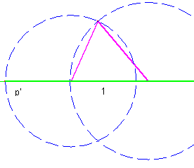
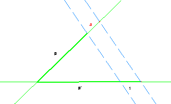

Para el aula
Problema 324
Ejercicio 31. Construir un triángulo conociendo el perímetro y dos
ángulos.
Severi, F.
(1952) : Elementos de geometría I, con 220 figuras,
traducción de la segunda edición italiana por el profesor T. Martín Escobar, de
la Escuela Industrial de Gijón. Tercera reimpresión. Editorial Labor,
Barcelona. Talleres Gráficos Ibero-Americanos S.A. Reproducción offset.(pág
201)
Solución de Maite Peña Alcaraz
Conociendo
dos ángulos de un triángulo se conocen los tres, dado que la suma de ellos es
180º. Por tanto, construyamos un triángulo cualquiera con ángulos iguales al
pedido. Esto se puede hacer tomando como base un lado de medida 1, y trazando
dos rectas que formen con el lado los ángulos pedidos. El punto de corte será
el vértice que falta del triángulo.
Una vez
que se tenga este triángulo, abatiremos sobre la base los dos lados para
conseguir el perímetro como muestra la figura.

Ahora,
utilizando el teorema de Thales, sabemos que nuestra base
a cumple que si p’ es el perímetro del triángulo dibujado, luego podemos obtener a:
